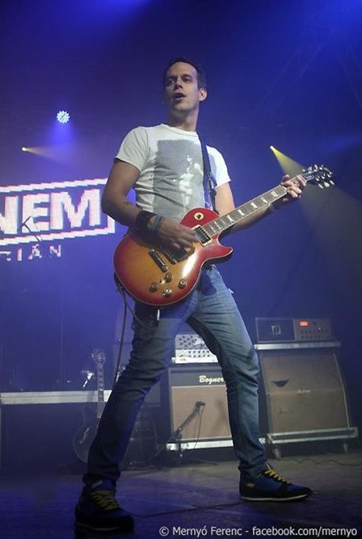

Pulius Tibor
Pulius Tibor a Supernem zenekar vokalistája és gitárosa. 1977.05.06-án született Kecskeméten. Zenész családba született, apja is híres gitáros, ezért egyértelmű lett volna, hogy zenével kezd el foglalkozni, de eredetileg sportolónak készült, aztán rátalált, vagy inkább ő talált rá az AC/DC-re, és úgydöntött, hogy megtanul gitarozni, ami láthatjuk mennyire jó ötlet volt, hiszen manapság Magyarország egyik legjobb gitárosaként van számontartva. Eleinte a jazz-rockban tevékenykedett a Freehand Art Factory nevű együttesben, majd egy-két évet jobban foglalkozott jazzel, és végül egy évet töltött a Kőbányai Zenei Stúdióban, ami után már nem sokkal következett a Supernem. Általában vidám hangulat jellemzi őt is, külsőre meg göndör haj.
Forrás